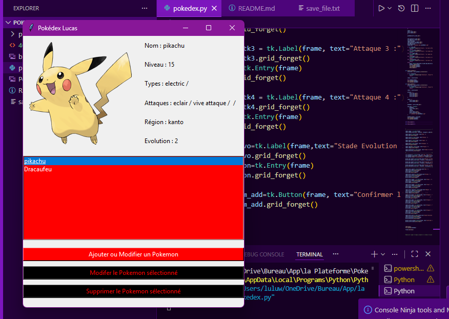
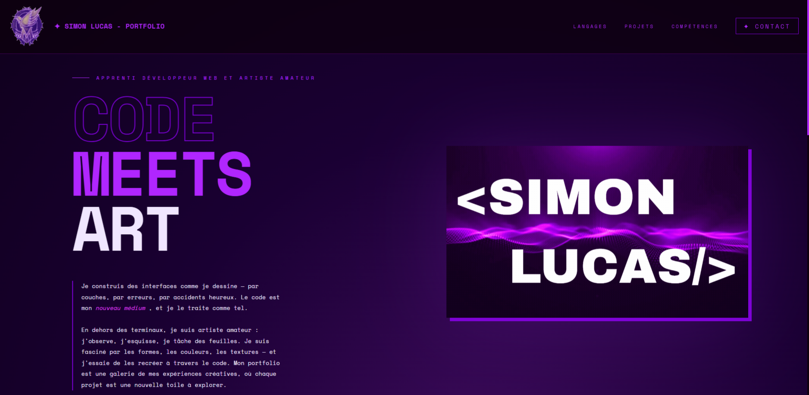

Weather Dashboard
Conception et développement d'un site web permettant de connaître la météo de n'importe quelle ville en France.
- HTML5
- CSS3
- JavaScript
- Responsive
Découvrez l'ensemble de mes réalisations en développement web et design d'interface, allant de l'intégration de maquettes à la création d'applications interactives.
Conception et développement d'un site web permettant de connaître la météo de n'importe quelle ville en France.
Reproduction du site web Foncière Malmaison dans un contexte d'évaluation en cours de formation.


Conception et développement d'une application "Pokedex" en python Tkinter
Conception et développement d'un site sous React ainsi que Vite
